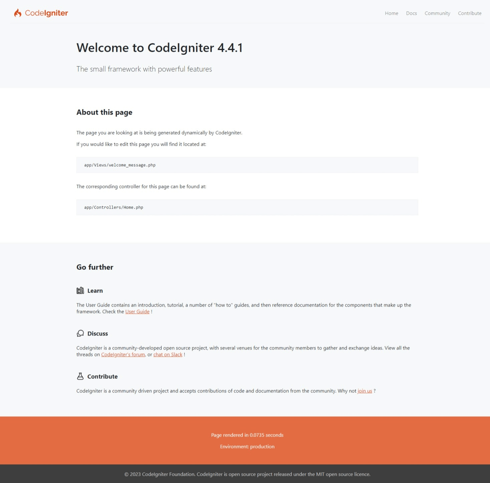

构建你的第一个应用¶
概述¶
本教程旨在向你介绍 CodeIgniter4 框架以及 MVC 架构的基本原理，并将会手把手的向你讲解如何开发一个基本的 CodeIgniter 应用。
如果你不熟悉 PHP，建议你先阅读 W3Schools PHP 教程，然后再继续阅读下面的内容。
在本教程中，你将创建一个 基本的新闻应用程序。你将从编写可加载静态页面的代码开始。接下来，你将创建一个新闻展示页面，用于从数据库中读取新闻内容。最后，我们再编写一个表单，用于在数据库中创建新闻内容。
本教程将主要关注：
- 模型-视图-控制器的基础知识
- 路由相关的基础知识
- 表单验证
- 使用 CodeIgniter 的“Query Builder”执行基本的数据库查询
整个教程分为几个章节，每个章节仅解释 CodeIgniter 框架功能的一小部分。你将会阅读到以下几个章节：
- 介绍章节，也就是本文，本章将概括性的为你讲解如何下载框架并运行自带的默认应用。
- 加载静态页，本章将为你讲解控制器，视图和路由的基础知识。
- 新闻展示功能，你将在这里开始使用模型，并将进行一些基本的数据库操作。
- 创建新闻项目，本章将介绍更高级的数据库操作和表单验证。
- 结束语，本章将为你提供进一步阅读的指导和一些其他资源。
享受 CodeIgniter 框架的探索之旅。
开始并运行¶
你可以从官网手动下载框架文件，但是对于本教程，我们将使用推荐的方式并通过 Composer 安装 AppStarter 软件包。在命令行中输入以下内容：
➜ composer create-project codeigniter4/appstarter ci-blog -s rc
这将创建一个新文件夹 ci-blog，其中包含你的应用程序代码，并且在 vendor 文件夹中安装了 CodeIgniter。
默认情况下，CodeIgniter 以生产模式启动。这是一项安全措施，可防止你的网站在上线后马上被攻击，从而使网站更加安全。所以首先让我们先修改一下这部分内容。将 env 文件复制或重命名为 .env，并打开它。
该文件包含服务器特定的设置。这意味着你无需将任何敏感信息提交到代码库中。它包括一些常用的公共配置项，尽管它们都已被注释掉。因此，取消注释 CI_ENVIRONMENT 所在的代码行，然后将 production 更改为 development:
CI_ENVIRONMENT = development
这样一来，你就可以在浏览器中查看这个应用了。你可以通过你喜欢的任何 Web 服务器（Apache 或 Nginx 等等）为它提供服务，但是 CodeIgniter 也附带了一个简单的命令，该命令使用 PHP 的内建服务器来帮助你在开发机上快速启动并运行。在项目的根目录中，在命令行中输入以下内容:
php spark serve
欢迎页¶
现在，在浏览器地址栏中输入正确的 URL，你将看到框架的欢迎页面。立即尝试以下 URL：
http://localhost:8080
你将看到类似这样的页面：
这意味着你的应用程序已经正常运行了，你可以开始编写你自己的代码了。
调试¶
现在你处于开发模式，你将在应用程序底部看到一个工具栏。该工具栏包含许多有用的功能，你可以在开发过程中使用这些功能。这个工具栏不会出现在生产环境中。单击底部的任何选项卡将显示附加信息。单击工具栏右侧的 X 可以将其最小化为带有 CodeIgniter 图标的小方块。如果单击该工具栏将再次显示。
除此之外，当你在程序中遇到异常或其他错误时，CodeIgniter 还会提供一些有用的错误页面。打开 app/Controllers/Home.php 并修改一些内容以制造一个错误（删除分号或花括号试试~）。屏幕将显示类似以下内容的页面：

这里有几件事要注意：
- 将鼠标悬停在顶部的红色标题上会显示一个
搜索链接，该链接将在新标签页中打开 Google.com 并搜索此错误的相关信息。 - 单击 Backtrace 中任意行上的
arguments链接将展开传递到该函数调用中的参数列表。
页面中的其他内容都是简明易懂的。
现在，我们已经入门了，并了解了一点调试程序的方法，下面让我们开始构建这个小型新闻应用吧。